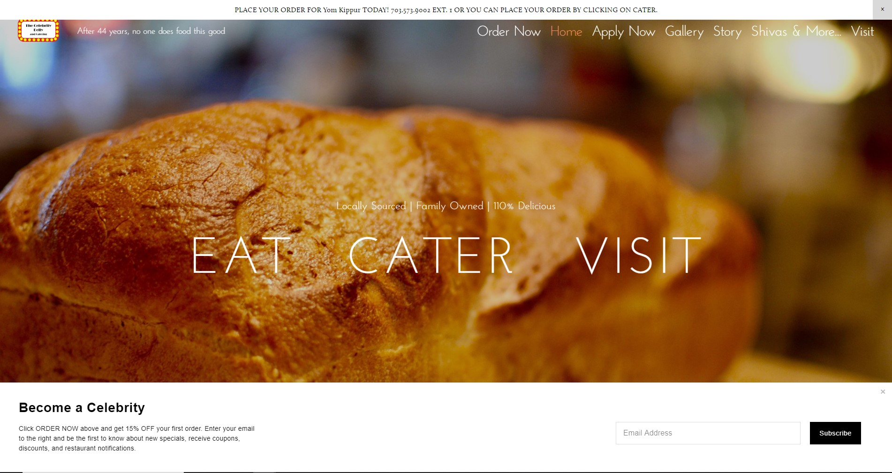

Peter Parker
AVT-217-004
Fall 2019
Red Apron Butchery
The website is very straight forward and largely consists of one page, the homepage. This is good because it provides information to the reader very directly, since you only need to scroll downward to read the different sections. The menu however is a little bit harder to find, and it is something that is very important. The menu is different for each of the three locations, so there is a link to each menu under each location. These links are not different from the regular text in size, color, typeface, or font, so I had no idea they were links at first. The descriptions under each of the locations are also NOT in the same order as the location listings themselves, reading left-to-right.
Celebrity Deli
Celebrity Deli's website also features a picture of food front and center when you land on the homepage, but instead of scrolling down, the links to the three main sections of the website are right there front and center. The image changes depending on what link you hover on, and the link changes color, signifying that this is indeed a clickable link. Clicking on a link brings up a full page overlay that is able to scroll down, so there is minimal loading time when bringing up the menu or catering details for example. The sections themselves feature the website's stylized font but remain clear of any unnecessary elements or colors, opting for dark-colored text on a white background for legibility.
Freddy's Frozen Custard & Steakburgers
Freddy's website is similar to Red Apron's in that it lands on a slideshow of food and allows scrolling down. However, the homepage is much more condensed and provides much less information because it provides links to other pages on the website instead of providing all the information on the homepage. This could be fine on desktop but could prove cumbersome on mobile devices, as some of the elements on the homepage are moving or have parallaxed background images. The other pages of the website are reminiscent of a more traditional website design with a recognizable header navigation bar, a body containing necessary elements, and a footer. Some pages even feature a right-aligned sidebar. These designs could be more familiar with a wider audience.
Bonchon
Bonchon continues the trend of landing on the homepage with a slideshow of food. This website, while it delivers its aesthetic qualities very well, could be hard to navigate for a lot of users. The navigation bar is UNDER the slideshow of food, not above it. It does, however, stick to the top of the page if you scroll past it. Unlike Red Apron and Freddy's the sections of information provided when you scroll down on the homepage doesn't make much sense upon first glance as they aren't really delineated or notify the user as to what purpose they serve. It appears to be a slideshow of a dish and a review, a slideshow of three dishes, the restaurant's story, then a sample post from their Instagram, followed by the footer. Although limited, they do provide some accessibility options for text and color contrast, which is always a plus as most website do not have these features.
Honey Pig BBQ
This website is startlingly simple. Aside from the slideshow of food coupled with a recently won award, there is nothing else on the homepage outside of the navigation and the footer except for a signup to the restaurant's newsletter. The pages are also few and straight to the point; menu and locations are readily available at the top of the page with the navigation, and the pages themselves offer only the chosen font on a white background coupled with a few images and in a few cases embeded videos. This offers really direct transfer of information to whoever is viewing the website.